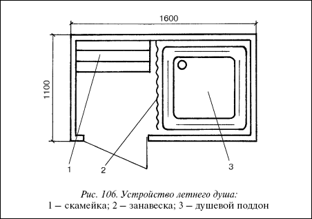
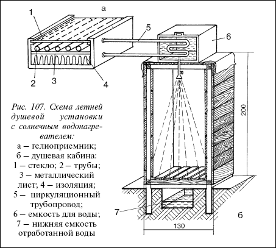
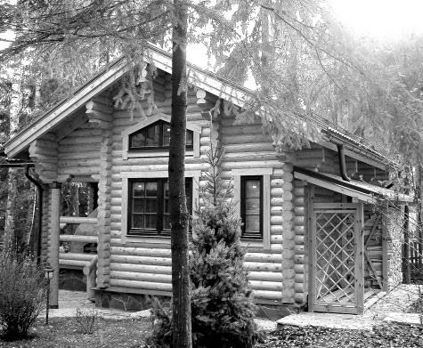
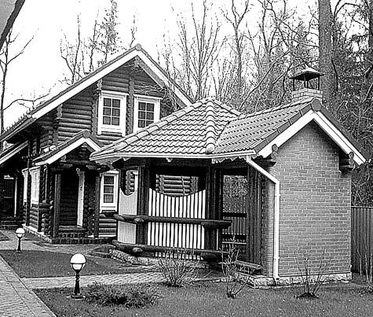
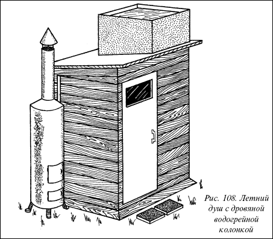

Летний душ.

Наиболее легко и просто на приусадебном участке можно сделать следующий летний душ.
Помещение для душаДелается при помощи щитовой конструкции из досок.
Самый простейший вариант обеспечивается установкой на крыше бака для воды. К баку приворачивается или привинчивается сливная труба, на которой установлен кран и душевая сетка. Обогревание воды осуществляется как правило за счет солнечной энергии. Если на участке имеется водопровод, то летний душ без особых усилий оборудуется дровяной колонкой для подогрева воды, что создает дополнительные удобства для пользования в прохладную погоду.

Рис. 106. Устройство летнего душа:
1 – скамейка; 2 – занавеска; 3 – душевой поддон

Рис. 107. Схема летней душевой установки с солнечным водонагревателем:
а – гелиоприемник; 6 – душевая кабина: 1 – стекло; 2 – трубы; 3 – металлический лист; 4 – изоляция; 5 – циркуляционный трубопровод; 6 – емкость для воды; 7 – нижняя емкость отработанной воды
Варианты сооружения душа
Для сооружения душевой кабины используют бруски сечением 15x15 см. Для того, чтобы не было щелей каркас снаружи обшивают отходами пиломатериалов, а внутри обтягивают клеенкой или полимерной пленкой. Лучше всего покрасить масляной краской или облицевать водостойким пластиком.
Емкость для водыВнимание
Так как древесно-стружечные плиты (ДСП) обладают низкой водостойкостью применять их при сооружении душевой кабины нельзя.
В металлической бочке вода будет лучше нагреваться, если бочку покрасить черной краской. Чтобы вода в бочке меньше испарялась, верх емкости покрывают стеклом. Главным образом используется тепличный эффект: вода нагревается солнечными лучами, проникающими через стекло.


Использование солнечной панели (гелиоприемника)
Суть гелиоприемника заключается в том, что он, поглощая энергию солнца, преобразует ее в тепловую.

Рис. 108. Летний душ с дровяной водогрейной колонкой